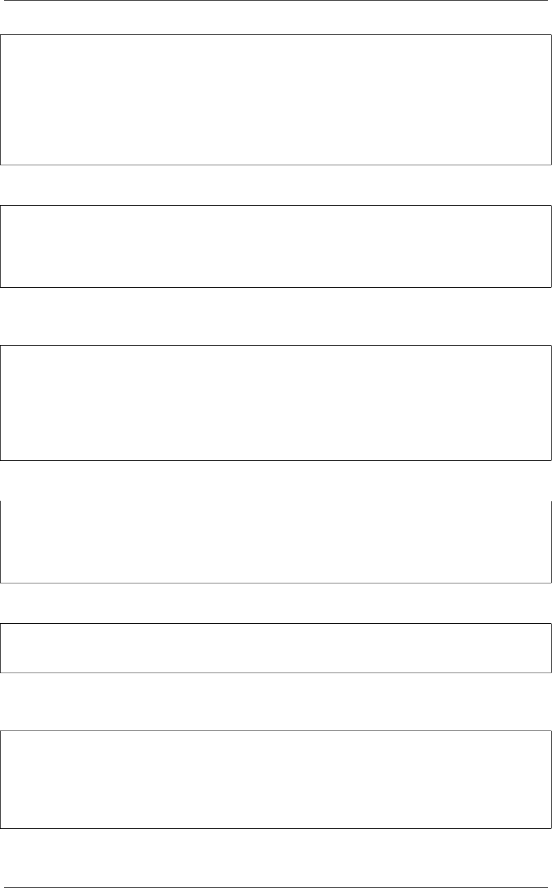

《Python Cookbook》第三版, Release 2.0.0
>>> text ='Hello World'
>>> text.ljust(20)
'Hello World '
>>> text.rjust(20)
'Hello World'
>>> text.center(20)
'Hello World '
>>>
所有这些方法都能接受一个可选的填充字符。比如：
>>> text.rjust(20,'=')
'=========Hello World'
>>> text.center(20,'*')
'****Hello World*****'
>>>
函数 format() 同样可以用来很容易的对齐字符串。你要做的就是使用 <,>或者
ˆ字符后面紧跟一个指定的宽度。比如：
>>> format(text, '>20')
'Hello World'
>>> format(text, '<20')
'Hello World '
>>> format(text, '^20')
'Hello World '
>>>
如果你想指定一个非空格的填充字符，将它写到对齐字符的前面即可：
>>> format(text, '=>20s')
'=========Hello World'
>>> format(text, '*^20s')
'****Hello World*****'
>>>
当格式化多个值的时候，这些格式代码也可以被用在 format() 方法中。比如：
>>> '{:>10s} {:>10s}'.format('Hello','World')
'Hello World'
>>>
format() 函数的一个好处是它不仅适用于字符串。它可以用来格式化任何值，使
得它非常的通用。比如，你可以用它来格式化数字：
>>> x=1.2345
>>> format(x, '>10')
'1.2345'
>>> format(x, '^10.2f')
'1.23 '
>>>
4.13. 2.13 字符串对齐 59